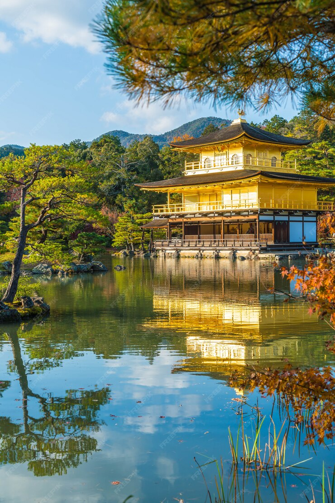

Japan
Japan is an island nation located in East Asia
Well Come To
JAPAN
Welcome to our platform, where history, culture, and innavation meet! Eplore the rich herotage of ancient civilizations.
writness the milestanes of humanprogress, and dive into the stories that have shaped our world. Whether you're fascinated
by early socieries or modern archivements, we invite you to embark on a discovery and learning. Stay curious,
stay inspired, and enjoy your exploration with us!
click Tag
Here are lots of interesting destinations to visit,
but don't be confused-they're already grouped
by category.

Kinkaku-ji Golden Pavilon

Fushimi Inari Taisha
Historical of Japan
From Ancient Times to Modern Power
Japan's early history dates back to the Jomon period(14,000 B.C.-300 B.C.).
with a hunter-gatherer society known for pottery.The Yayoi period (300
B.C.-300 A.D.) introduced rice cultivation and metalworking, while the Kofun
period (300-538 A.D.) saw the rise of powerful clans. Buddhism arrived in
the 6th century, shaping Japanese culture and governance during the Asuka
and Nara periods. The Heian period (794-1185 A.D.) was a cultural golden
age.
Feudal Japan emerged in the 12th century, with samurai and shogunates
ruling. The Tokugawa Shogunate (1603-1868 A.D.) brought peace and
isolation until Western powers forced Japan to open in the mid-19th
century. The Meiji Restoration in 1868 led to rapid modernization. Japan
became a world power, expanding its empire in the early 20th century but
faced defeat in World War II. Today, Japan is a major economic and
technological hub.